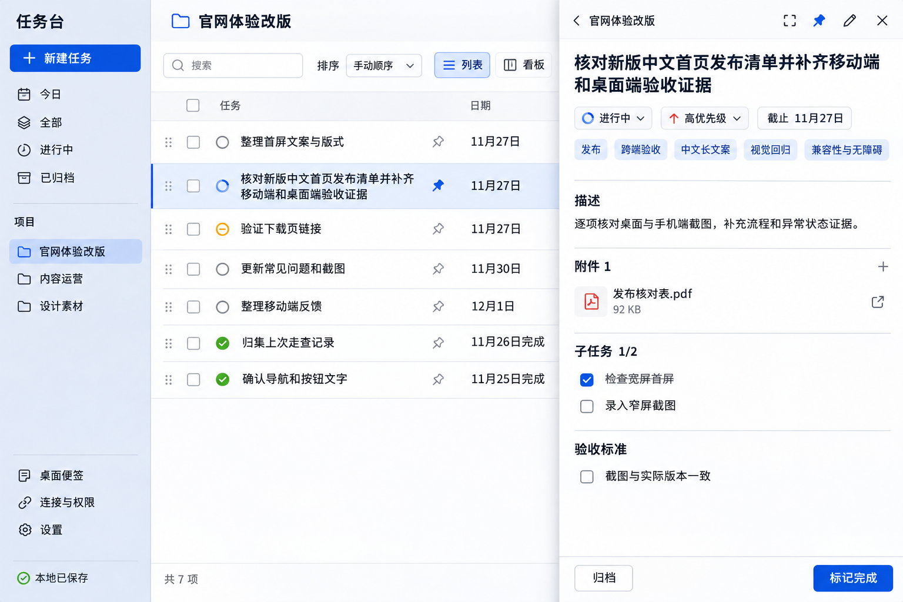
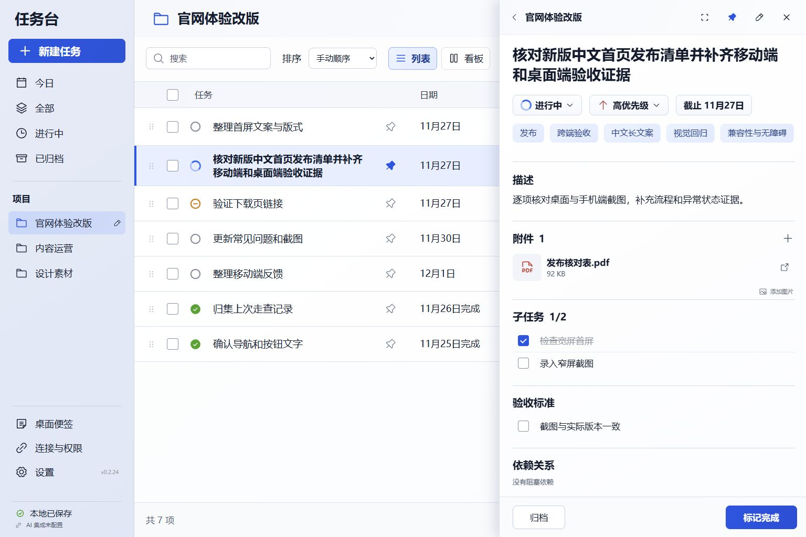
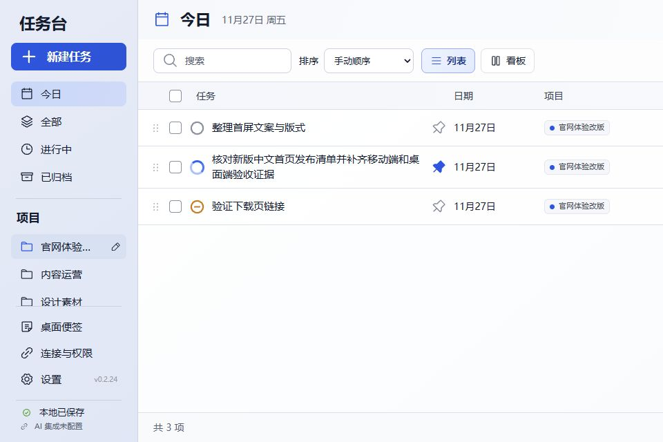
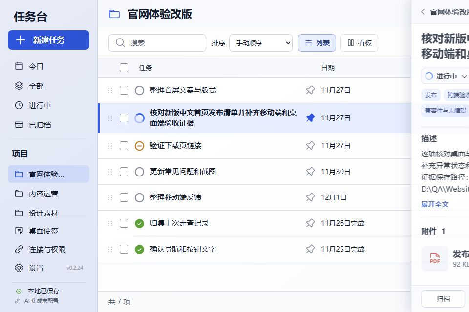
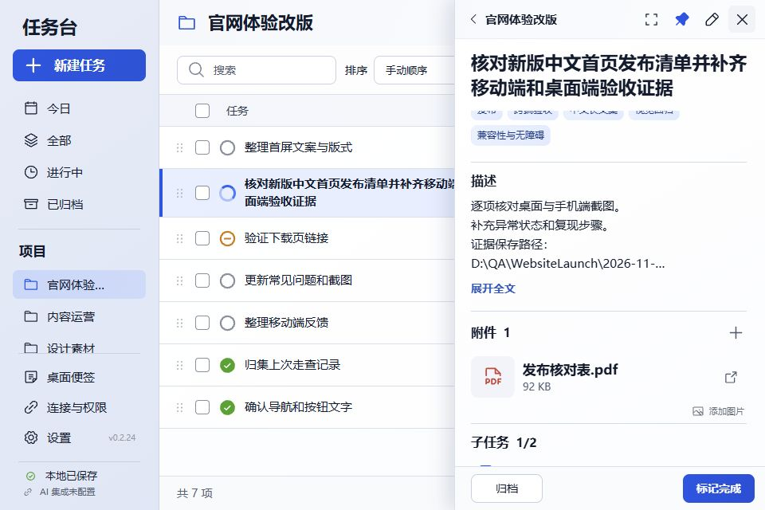
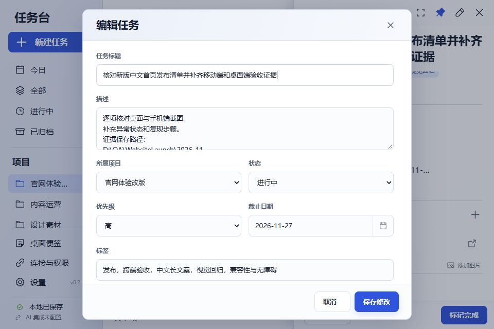
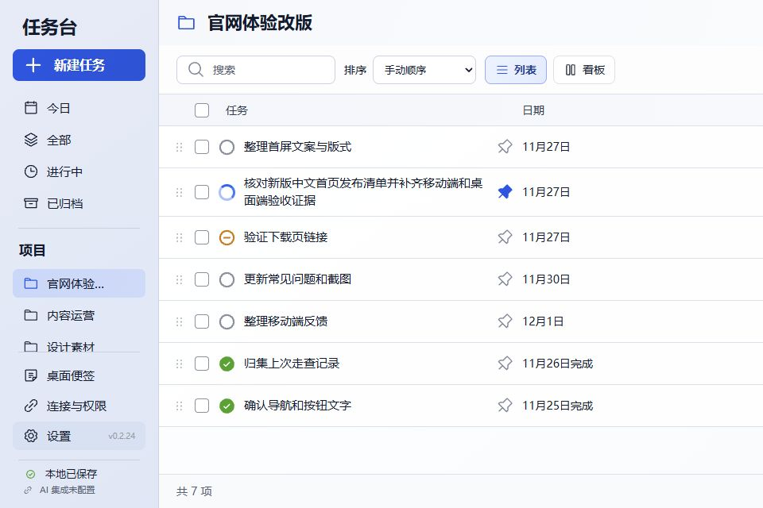
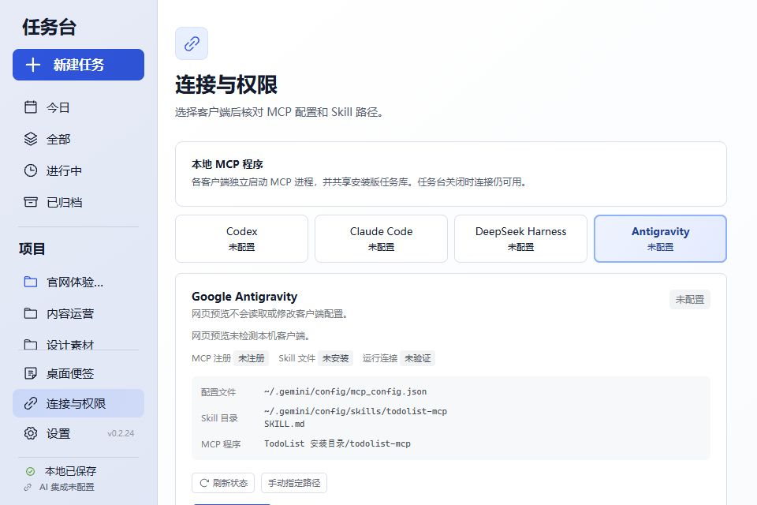
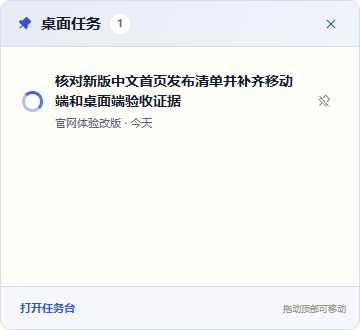

确认稿与实现对照
Edge 实际渲染与用户确认附图采用同一 1536 × 1024 视口、100% 缩放、七条任务、手动顺序和选中状态。下方两个原图可点击放大。
项目列表与任务详情




叠加查看对齐
按附图对齐 256 像素侧栏、156 像素表头起点、选中行左蓝边和 585 像素详情。详情打开前后工作区宽度相同。中文使用 Windows 微软雅黑，图标沿用项目现有 Phosphor。实际界面另外保留了便签、设置和连接状态、空图片入口、依赖与任务来源及时间信息。
长描述与窄窗




折叠高度为 96 像素，行高 24 像素。全宽下一份恰好四行的描述直接显示。同一任务从另一个浏览器标签刷新后仍保持展开，换任务再打开时恢复折叠。编辑器读到完整路径、段落换行和刷新追加的内容。
页面延展










实测操作
- 键盘打开与关闭详情，Tab 位于详情，关闭后焦点回到来源任务行。外露列表可滚动，点击底下的复选框只关闭详情。
- 详情下拉直接修改状态和优先级。未验收时阻止标记完成，勾选后完成并显示完成时间，重开清除本轮完成时间。
- 截止排序显示实际截止日期，完成行另示完成日期。升降序切换、手动顺序恢复及手柄键盘重排均已操作。
- 看板拖到「已阻塞」成功，可用状态选择器移回，四列独立滚动。编辑器对无效日期提示错误。
- 使用 End 键切到 Antigravity，卡片显示全局路径和独立的运行连接状态。磁盘配置另在隔离 Rust 夹具验证。
当前画面来自浏览器。Antigravity 客户端连通与 Windows 原生便签窗口行为需在安装版核验。浏览器实测记录 · 同内容预览样例 · Antigravity 流程